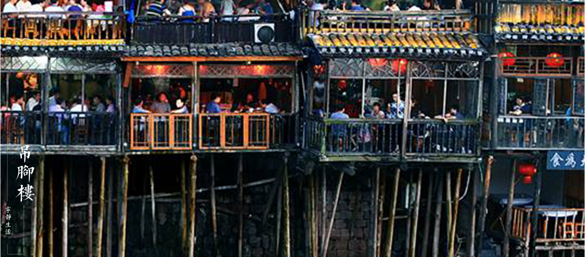

土家族是汉族对“毕兹卡”的称呼。乌江画廊土家族自称“毕兹卡、毕基卡、密基卡等”。通用汉文，崇拜祖先，信仰多神，与苗、
汉人杂居。历史上，土家族先民被称为“蛮”或“夷”。宋代以前，居住在武陵地区的土家族与其他少数民族一起，被称为“武陵蛮”
或“五溪蛮”。宋代以后，土家族就单独被称为“土丁”、“土人”、“土民”或“土蛮”等。改土归流后，随着汉族移民的增加，“土”、
“客”、“苗”往往对举，以对武陵地区的土家、汉、苗三族进行区分。“土家”作为族称，是在较晚时期出现的。民国时期的《咸丰
县志》将土司后裔的“支庶之家”称为“土家”，而将当地汉族移民称为“客家”。土家族大姓主要有田、向、覃、彭、冉、李、杨、
刘、王、陈、赵、黄等。
傩堂戏
傩堂戏是土家族的一种祭祖活动，又受到中原文化及巴、楚文化的影响，有着比较明显的巴人“俱事鬼神”和楚人笃信巫术的文化
痕迹。它融巫术、原始宗教和戏剧为一体，成为一种佩戴面具演出的宗教祭祀戏剧，据说已有六百多年的历史，经过不断充实、
扩展和完善，形成了以傩仪、傩戏、傩舞、傩技为主要形式的傩文化
茅古斯舞
茅古斯，土家语称为“古司拨铺”，意即“祖先的故事”。汉语多称为茅古斯或毛猎舞。属土家族流传至今的古老的表演艺术之一，
且传统的毛古斯是不允许女性参与表演。主要于每年岁首参与土家族摆手舞中作穿插性表演，也有在一定场合单独表演。茅古斯以
近似戏曲写意、虚拟、假定等技术手法，表演土家祖先渔猎、农耕、生活等内容，既有舞蹈的雏形，又具有戏剧的表演性，两者杂
糅交织，形成浑然一体的祭祀性舞蹈。
茅古斯相传为茹毛饮血时代的土家先民，后来把他们所创造的舞蹈也叫茅古斯。茅古斯舞是土家族最为原始的古典舞蹈。是土家
族为了纪念祖先开拓荒野、捕鱼狩猎等创世业绩的一种原始戏剧形式，流行于湘西永顺、龙山、古丈等土家族地区。茅古斯虽然
还不是成熟的戏剧形式，但已有模拟远古先民劳动和生活的故事情节，并通过舞蹈、道白来表达表内容，被专家称为中国戏剧的
“活化石”。
土家摆手舞
摆手舞是土家族祭祀祈祷的一种活动，一般在年节举行，并发展为祭祀、祈祷、歌舞、社交、体育竞赛、物资交流等综合性的民
俗活动。“摆手”有大小之分。每隔三、五年举行一次的叫“大摆手”。“大摆手”规模大、套数多、时间长，历时七、八天，与集市
贸易、文艺体育活动一起，在“摆手堂”前举行。“摆手堂”，在土王祠。“小摆手”规模小，套数少，一般是一至三天，多在本氏族
祠堂举行。土家人在摆手活动中，追忆祖先创业的艰辛，缅怀祖先的功绩，展示土家先民的生活场景，整个活动都有着浓厚的祖
先崇拜痕迹。
土家油茶
土家人的油茶汤，制作十分考究。先将茶叶、粉丝、黄豆等物，用油炸过，加煮熟的腊肉粒、豆腐颗和玉米泡，再加葱花、姜米等
佐料，掺上烧沸的油汤，吃起来清香爽口；油茶汤冬可暖身，夏可消暑，提神解乏，疗饥醒酒，许多人四季不离，每日必饮。它是
土家人待客的传统民族饮料。
土家服饰
如今的土家族服饰，女装为短衣大袖，左袄开襟，滚镶2～3层花边，镶边筒裤或裙；男装为对襟短衫。“过赶年”，即提前l～2天
过年，是其重要节日。土家族男子穿琵琶襟上衣，缠青丝头帕。妇女着左襟大褂，滚两三道花边，衣袖比较宽大，下着镶边筒裤或
八幅罗裙，喜欢佩戴各种金、银、玉质饰物。但不如苗族的银饰，一般占不了太显眼的部分。改土归流后，受汉族影响，有色必
有红，久而久之，不但在服饰上而且在生活上也形成了无红不成喜，有喜必有红之俗。

吊脚楼
土家族爱群居，爱住吊脚木楼。建房都是一村村，一寨寨的，很少单家独户。所建房屋多为木结构，小青瓦，花格窗，司檐悬空
，木栏扶手，走马转角，古香古色。一般居家都有小庭院，院前有篱笆，院后有竹林，青石板铺路，刨木板装壁，松明照亮，一
家过着日出而作，日落而息的田园宁静生活。
如今的土家族大多居于木质吊角楼，一般是依山的吊角楼，在平地上用木柱撑起分上下两层，上层通风、干燥、防潮，是居室；
下层是猪牛栏圈或用来堆放杂物。房屋规模一般人家为一栋4排扇3间屋或6排扇5间屋，中等人家5柱2骑、5柱4骑，大户人家则7
柱4骑、四合天井大院。4排扇3间屋结构者，中间为堂屋，左右两边称为饶间，作居住、做饭之用。饶间以中柱为界分为两半，
前面作火炕，后面作卧室。吊脚楼上有绕楼的曲廊，曲廊还配有栏杆。
土家婚俗
土家男女多经对歌相爱结婚。土家族婚俗女子出嫁前，有“哭嫁”的风俗。为了准备哭嫁，女孩稍懂事，就要学习哭嫁。观摩、学
习如何哭，很小时就陪哭。在哭嫁时，口中念念有词，叫做“送嫁饭”。哭嫁时，同村亲友的女孩都来陪哭。陪哭的人，哭得越伤
心，越动听，越感人越好。在出嫁前，姑娘如果不会哭嫁，就会受到歧视和讥笑。男方必须送粑粑到女方家，参加哭嫁的人多、
范围广，而且有专门的哭嫁歌。在婚前哭嫁的时间短则五、六天，长则一二个月。要与家人、亲戚、朋友之间哭。哭的内容有“哭
爹娘”、“哭哥嫂”、“哭姐妹”、“哭媒人”、“满堂哭”、“表姐妹哭”、“堂姐妹哭”等等。解放后哭嫁已逐渐淡化，仅在深山僻野居
住的部分土家人中还有遗风遗俗。
女子未出嫁之前，忌剪发；新娘回门时，忌为娘家扫地，恐将娘家财气扫光。回门日，新郎吃岳丈家头一餐时，忌将岳家特意多
盛的一大碗饭吃光，忌将酒杯中事先投入的两粒黄豆（金豆）吃掉，酒后应留在杯中，以免将岳家吃穷喝光。回门时，忌新婚夫
妇在岳（娘）家同房。
主客禁忌
主人待客忌用狗肉,土家人认为狗肉不宜上正席,否则是对客人的不礼貌。忌三、七、八上菜数字,俗称“三碗是叫亡的”、“七强
八盗九江湖”；忌用大海碗给客人盛饭,吃饭时忌脚踏旁边人的坐椅。若客人已坐定,主人要走动,则只准从客人身后走,不宜走在
客人前面；如果地方狭窄,必须走客人前面时,要说一声“得罪了”,否则,是对客人的不敬。主客坐下后,年轻的客人不准在长者面
前架二郎腿,否则是对主人的不敬。客人未得主人的允许,不得进入主人家的内房(卧室),尤其不准进入吊脚楼上的闺女房,否则主
人会生气。客人吃完饭后,不能将筷子摆成十字架于碗上,此行为在土家族人心目中是大不敬。客人吃完后,最好将筷子并齐整,放
于碗旁边。此习现仍盛行。